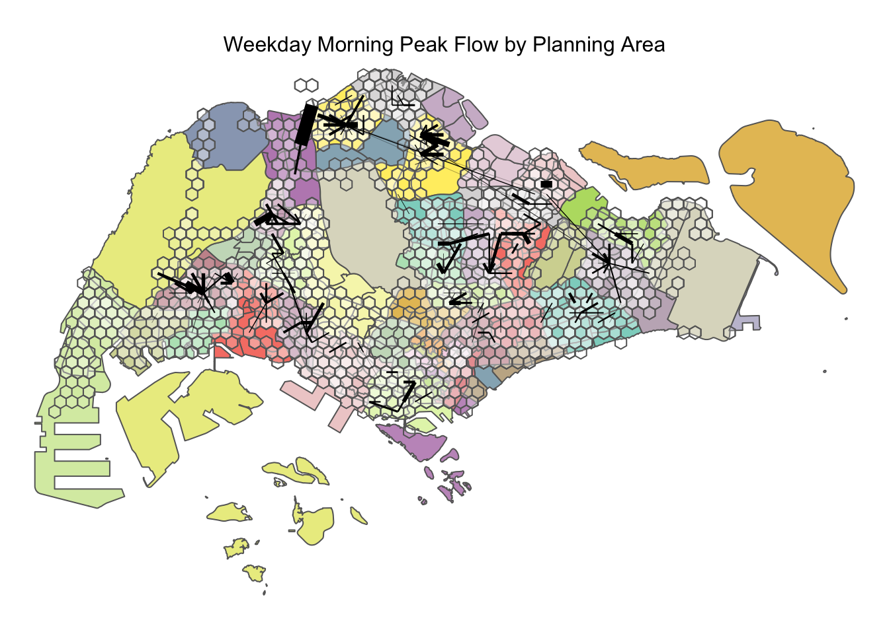
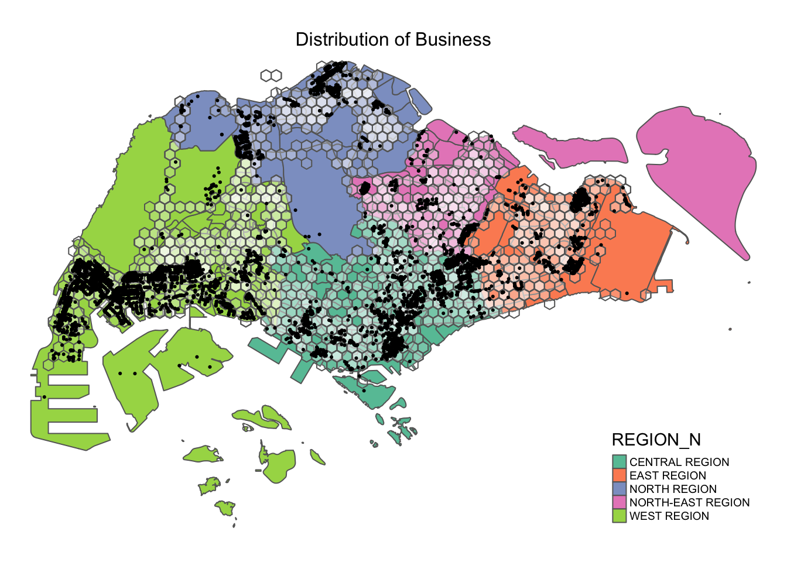
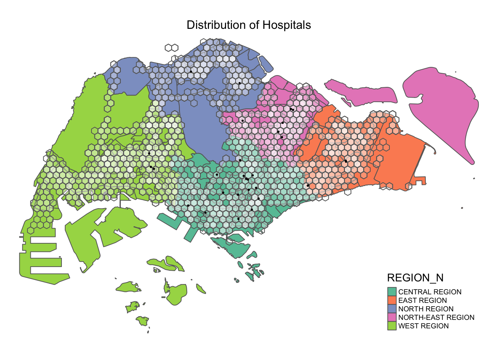
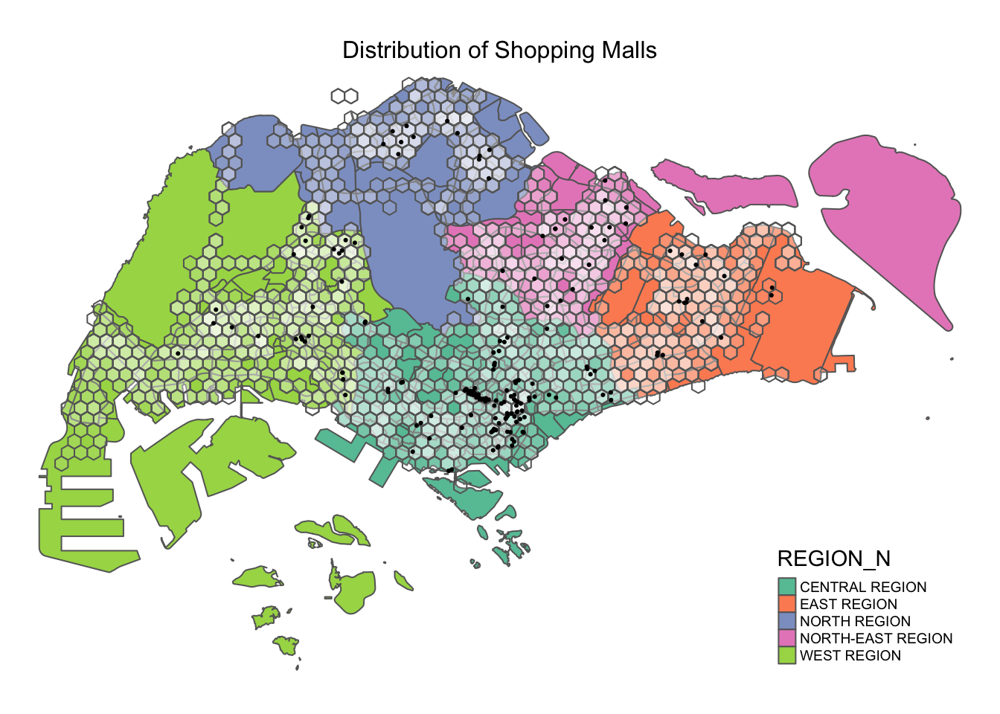
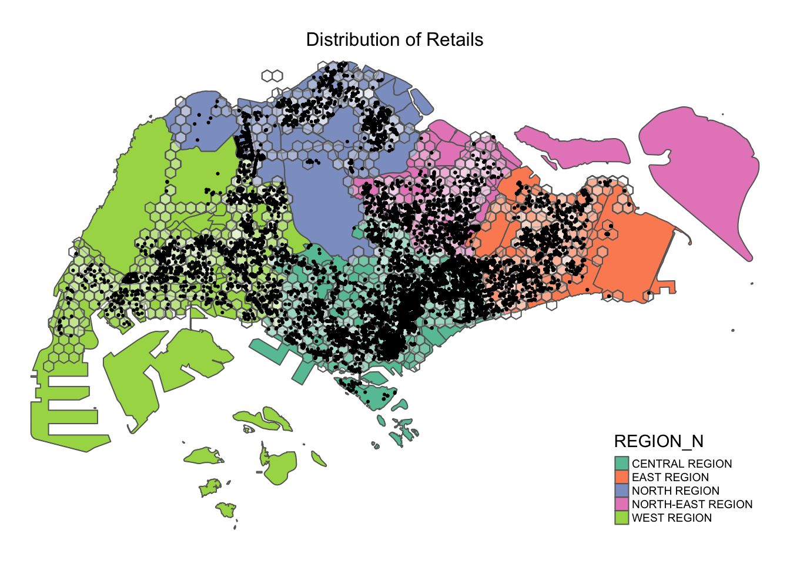
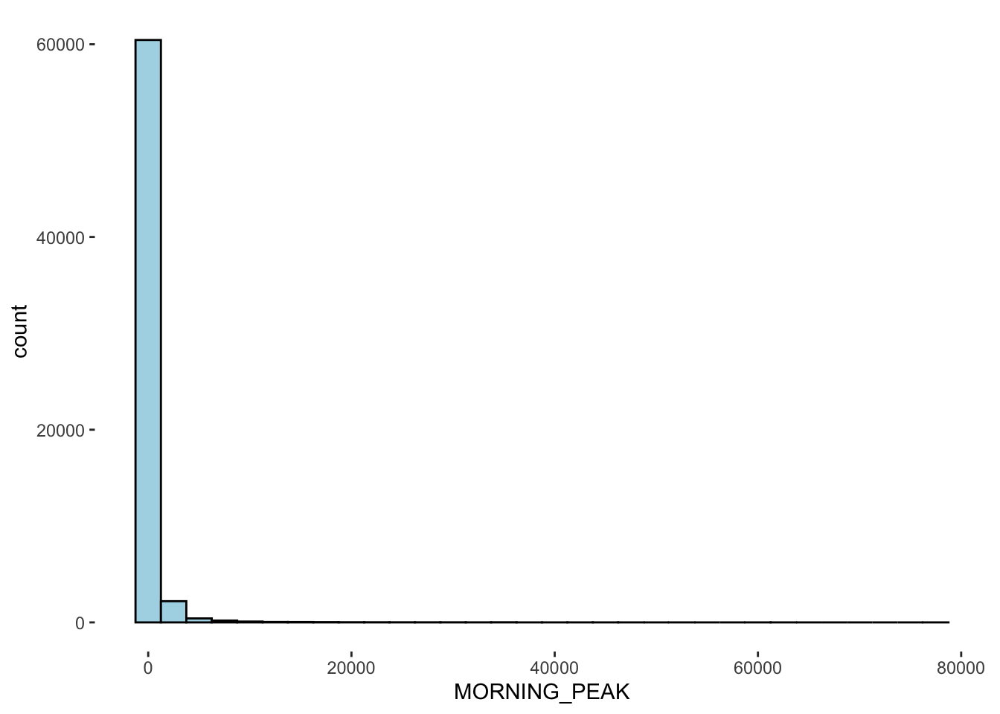
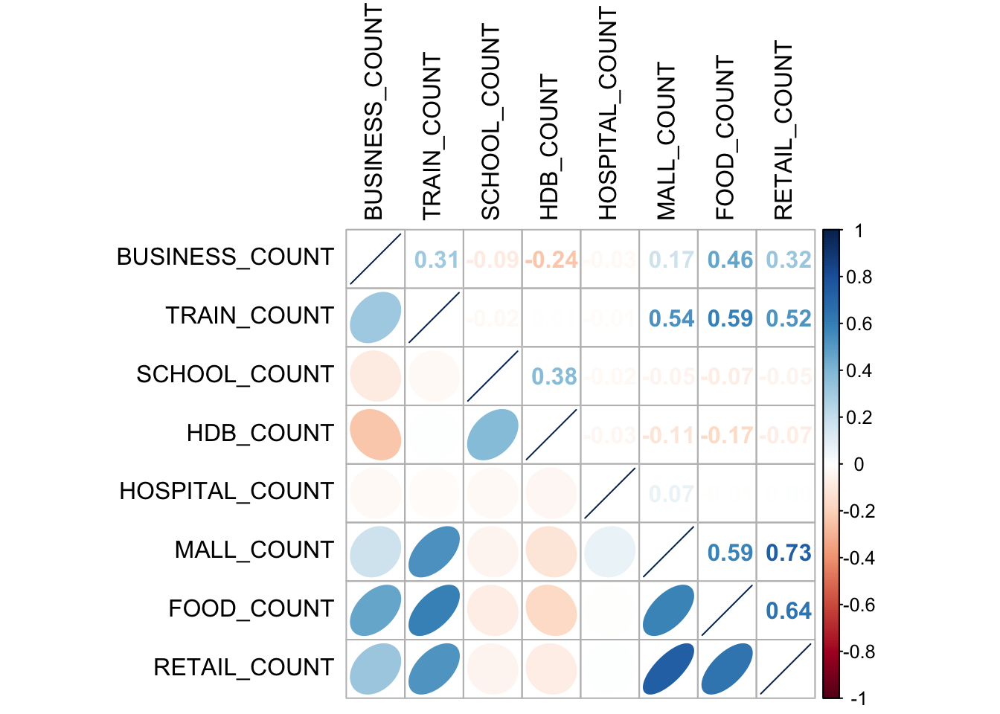
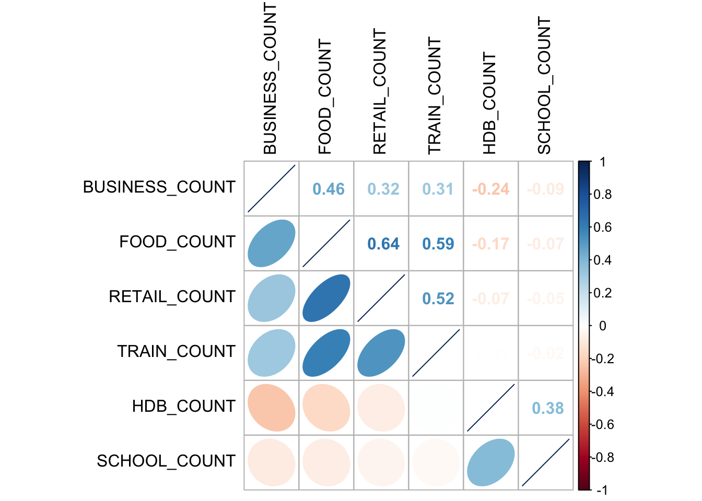

pacman::p_load(tmap, sf, sp, DT, stplanr, tidyverse, reshape2, performance, ggpubr, olsrr, corrplot, GWmodel, gtsummary, knitr)Applied Spatial Interaction Models
A case study of Singapore public bus commuter flows
1. Overview
Urban mobility and public transport service planning are critical challenges for transport operators and urban planners. Questions on the commute patterns and bus service demands are traditionally explored through commuter surveys. Despite providing valuable insights, these surveys are costly, time-consuming, and the data require extensive cleaning and analysis, often rendering the findings outdated by the time they are ready for use.
In contrast, the digitization of urban infrastructure, such as public buses, trains, and roads, offers a wealth of data that can capture movement patterns over time and space. The advent of pervasive computing technologies like GPS and smart cards for transport has led to an explosion of geospatial data.
This exercise is propelled by two key motivators: the utilization of open data for policy-making, and the demonstration of practical research using geospatial data science and analysis in decision-making processes.
2. Methods

Derive an analytical hexagon data of 375m to represent the traffic analysis zone.
Construct an OD matrix of commuter flows for the following time intervals:
- Weekday morning peak from 6am to 9am (selected time interval)
- Weekday evening peak from 5pm to 8pm
- Weekend/holiday morning peak from 11am to 2pm
- Weekend/holiday evening peak from 4pm to 7pm
Display the O-D flows of the passenger trips.
Describe the spatial patterns revealed by the geovisualisation.
Assemble propulsive and attractiveness variables by using aspatial and geospatial from publicly available sources.
Compute a distance matrix by using the analytical hexagon data.
Create four log-based Poisson spatial interactive models to determine propulsiveness and attractiveness factors affecting urban commuting flows at the selected time interval.
- Unconstrained Model
- Origin (production) constrained model
- Destination (attraction) constrained model
- Doubly constrained model
Calibrate spatial interactive models using propulsiveness and attractiveness factors.
Compare the modelling results of the four spatial interactive models.
3. Load packages
R package functions
The analysis involves the following packages:
sfhandles spatial data.tidyversehandles attribute data.DTenables R data objects (matrices or data frames) to be displayed as tables on HTML pages.stplanranalyses OD matrix.reshape2restructures and aggregates data.performancecontains utilities for computing measures to assess model quality.ggpubrarrange and annotate multiple plots.olsrrbuilds OLS and performing diagnostics tests.GWmodelcalibrate geographical weighted family of models.corrplotenables multivariate data visualisation and analysis.tmapplots choropleth maps.
3. Import data
The analysis will leverage on real world data, broadly categorized as geospatial and aspatial data. For all geospatial data, we will use the same coordinate reference system, SVY21.
busstop is a geospatial dataset containing the detailed information for all bus stops currently serviced by buses, including bus stop code, road name, description, location coordinates.
The output indicates that the geospatial objects are point features. There are 5161 features and 3 fields. It is in SVY21 projected coordinates system with XY dimension.
Source: LTA DataMall (Postman URL)
Show the code
busstop <- st_read(dsn = "data/geospatial", layer = "BusStop") %>%
st_transform(crs = 3414)Reading layer `BusStop' from data source
`/Users/chockwankee/Documents/chockwk/ISSS624_Geospatial_Analytics/Take_home_Ex/Take_home_Ex02/data/geospatial'
using driver `ESRI Shapefile'
Simple feature collection with 5161 features and 3 fields
Geometry type: POINT
Dimension: XY
Bounding box: xmin: 3970.122 ymin: 26482.1 xmax: 48284.56 ymax: 52983.82
Projected CRS: SVY21mpsz is is a geospatial dataset of the Master Plan 2019, a forward looking guiding plan for Singapore’s development in the medium term over the next 10 to 15 years published in 2019.
The output indicates that the geospatial objects are multipolygon features. There are 332 features and 6 fields. It is in WGS84 projected coordinates system with XY dimension.
Source: URA (Download here)
Show the code
mpsz <- st_read(dsn = "data/geospatial", layer = "MPSZ-2019") %>%
st_transform(crs=3414)Reading layer `MPSZ-2019' from data source
`/Users/chockwankee/Documents/chockwk/ISSS624_Geospatial_Analytics/Take_home_Ex/Take_home_Ex02/data/geospatial'
using driver `ESRI Shapefile'
Simple feature collection with 332 features and 6 fields
Geometry type: MULTIPOLYGON
Dimension: XY
Bounding box: xmin: 103.6057 ymin: 1.158699 xmax: 104.0885 ymax: 1.470775
Geodetic CRS: WGS 84odbus is an aspatial dataset containing the number of trips by weekdays and weekends from origin to destination bus stops. It reflects the passenger trip traffic and the most recent dataset from October 2023 will be used.
The output indicates 5,694,297 records and 7 fields.
Source: LTA DataMall (Postman URL)
Show the code
odbus = read_csv("data/aspatial/origin_destination_bus_202310.csv")4. Create Analytical Hexagons
According to Statista, the average walking distance on a commute trip in Singapore is 396 meters.

As an estimation, the maximum walking distance is 792m and the cellsize of analytical hexagon grid is set to 750m.
Show the code
busstop_mpsz <- st_intersection(busstop, mpsz) %>%
select(BUS_STOP_N, SUBZONE_C)
glimpse(busstop_mpsz)Rows: 5,156
Columns: 3
$ BUS_STOP_N <chr> "13099", "13089", "06151", "13211", "13139", "13109", "1311…
$ SUBZONE_C <chr> "RVSZ05", "RVSZ05", "SRSZ01", "SRSZ01", "SRSZ01", "SRSZ01",…
$ geometry <POINT [m]> POINT (28696.2 30905.64), POINT (28303.29 30901.45), …Show the code
area_hexagon_grid <- st_make_grid(busstop_mpsz,
cellsize = 750,
crs = 3414,
what = "polygons",
square = FALSE)
area_hexagon_gridGeometry set for 2299 features
Geometry type: POLYGON
Dimension: XY
Bounding box: xmin: 3220.122 ymin: 26049.09 xmax: 48970.12 ymax: 50947.32
Projected CRS: SVY21 / Singapore TM
First 5 geometries:The hexagon grids will be indexed by row number and is an important reference for downstream analysis.
Show the code
hexagon_grid_sf = st_sf(area_hexagon_grid) %>%
mutate(INDEX = row_number()) %>%
rename(geometry = area_hexagon_grid,
index = INDEX)
glimpse(hexagon_grid_sf)Rows: 2,299
Columns: 2
$ index <int> 1, 2, 3, 4, 5, 6, 7, 8, 9, 10, 11, 12, 13, 14, 15, 16, 17, 18…
$ geometry <POLYGON [m]> POLYGON ((3595.122 26698.61..., POLYGON ((3595.122 27…Two datasets will be created with hexagon grids. First, hexagon_busstop is a fused dataset with bus stops allocated to each hexagon grid. Second, od is a fused dataset with bus stops in subzone information allocated to each hexagon grid, a foundation dataset for commute flow. Both datasets will be saved in rds.
Show the code
hexagon_busstop <- st_join(hexagon_grid_sf, busstop,
by = c("geometry" = "geometry")) %>%
drop_na()
od <- st_join(hexagon_grid_sf, busstop_mpsz,
by = c("geometry" = "geometry"))
glimpse(od)Rows: 6,624
Columns: 4
$ index <int> 1, 2, 3, 4, 5, 6, 7, 8, 9, 10, 11, 12, 13, 14, 15, 16, 17, …
$ BUS_STOP_N <chr> NA, NA, NA, NA, NA, NA, NA, NA, NA, NA, NA, NA, NA, NA, NA,…
$ SUBZONE_C <chr> NA, NA, NA, NA, NA, NA, NA, NA, NA, NA, NA, NA, NA, NA, NA,…
$ geometry <POLYGON [m]> POLYGON ((3595.122 26698.61..., POLYGON ((3595.122 …
Save rds
write_rds(hexagon_busstop, "data/rds/hexagon_busstop.rds")
write_rds(od, "data/rds/od.rds")5. Prepare OD Matrix
The selected time interval is weekday morning peak from 6am to 9am where majority of Singaporeans are active for a wide repetoire of purposes.
Show the code
odbus$ORIGIN_PT_CODE <- as.factor(odbus$ORIGIN_PT_CODE)
odbus$DESTINATION_PT_CODE <- as.factor(odbus$DESTINATION_PT_CODE)
odbus6_9 <- odbus %>%
filter(DAY_TYPE == "WEEKDAY") %>%
filter(TIME_PER_HOUR >= 6 & TIME_PER_HOUR <= 9) %>%
group_by(ORIGIN_PT_CODE, DESTINATION_PT_CODE) %>%
summarise(TRIPS = sum(TOTAL_TRIPS))
od1 <- left_join(odbus6_9, od,
by = c("ORIGIN_PT_CODE" = "BUS_STOP_N")) %>%
rename(ORIGIN_BS = ORIGIN_PT_CODE,
DESTIN_BS = DESTINATION_PT_CODE,
ORIGIN_SZ = SUBZONE_C)
od1$ORIGIN_BS <- as.factor(od1$ORIGIN_BS)
duplicate <- od1 %>%
group_by_all() %>%
filter(n()>1) %>%
ungroup()
od1 <- unique(od1)
od1 <- left_join(od1, od,
by = c("DESTIN_BS" = "BUS_STOP_N")) %>%
rename(DESTIN_SZ = SUBZONE_C,
ORIGIN_INDEX = index.x,
ORIGIN_GEOMETRY = geometry.x,
DESTIN_INDEX = index.y,
DESTIN_GEOMETRY = geometry.y) %>%
drop_na() %>%
group_by(ORIGIN_SZ, DESTIN_SZ)
od1$DESTIN_BS <- as.factor(od1$DESTIN_BS)
duplicate <- od1 %>%
group_by_all() %>%
filter(n()>1) %>%
ungroup()
od1 <- unique(od1)
glimpse(od1)Rows: 238,383
Columns: 9
Groups: ORIGIN_SZ, DESTIN_SZ [21,079]
$ ORIGIN_BS <fct> 01012, 01012, 01012, 01012, 01012, 01012, 01012, 01012…
$ DESTIN_BS <fct> 01112, 01113, 01121, 01211, 01311, 07371, 60011, 60021…
$ TRIPS <dbl> 290, 118, 77, 118, 165, 14, 30, 16, 35, 26, 2, 8, 1, 2…
$ ORIGIN_INDEX <int> 1334, 1334, 1334, 1334, 1334, 1334, 1334, 1334, 1334, …
$ ORIGIN_SZ <chr> "RCSZ10", "RCSZ10", "RCSZ10", "RCSZ10", "RCSZ10", "RCS…
$ ORIGIN_GEOMETRY <POLYGON [m]> POLYGON ((29845.12 30595.72..., POLYGON ((2984…
$ DESTIN_INDEX <int> 1354, 1354, 1392, 1392, 1411, 1411, 1393, 1431, 1450, …
$ DESTIN_SZ <chr> "RCSZ10", "DTSZ01", "RCSZ04", "KLSZ09", "KLSZ06", "KLS…
$ DESTIN_GEOMETRY <POLYGON [m]> POLYGON ((30220.12 31245.24..., POLYGON ((3022…Intra-zonal flow refers to the commute flows within the same subzone where ORIGIN_SZ = DESTIN_SZ. Travelling to and fro the same subzone neither generate any distance nor reflect real world scenarios. Hence, intra-zonal flow is removed.
Show the code
od1 <- od1[od1$ORIGIN_SZ!=od1$DESTIN_SZ,]
od1_data <- od1 %>%
drop_na() %>%
group_by(ORIGIN_INDEX, DESTIN_INDEX) %>%
summarise(MORNING_PEAK = sum(TRIPS))
summary(od1_data) ORIGIN_INDEX DESTIN_INDEX MORNING_PEAK
Min. : 21 Min. : 21 Min. : 1.0
1st Qu.:1010 1st Qu.:1013 1st Qu.: 7.0
Median :1299 Median :1296 Median : 37.0
Mean :1286 Mean :1284 Mean : 330.3
3rd Qu.:1563 3rd Qu.:1548 3rd Qu.: 167.0
Max. :2267 Max. :2267 Max. :77433.0
Save rds
write_rds(od1, "data/rds/od1.rds")
write_rds(od1_data, "data/rds/od1_data.rds")6. Create flowline
Flow lines represent movement between origins and destinations. To visualize major commute flows, the threshold for morning peak hour trips is set to 10,000.
Load rds
od1 <- readRDS("data/rds/od1_data.rds")Show the code
flowLine <- od1_data %>%
od2line(od, zone_code = "index")Weekday morning peak by region
Show the code
tmap_mode("plot")
tm_shape(mpsz) +
tm_polygons(col = "REGION_N", palette = "Set2") +
tm_shape(hexagon_busstop) +
tm_polygons(col = "white", alpha = 0.1) +
flowLine %>%
filter(MORNING_PEAK >= 10000) %>%
tm_shape() +
tm_lines(lwd = "MORNING_PEAK", style = "quantile",
scale = c(0.1, 1, 3, 5, 7, 10), n = 6, alpha = 1) +
tm_layout(main.title = "Weekday Morning Peak Flow by Region",
main.title.position = "center",
main.title.size = 1,
legend.position = c("right", "bottom"),
legend.outside = FALSE,
legend.text.size = 0.6,
frame = FALSE)Weekday morning peak by planning area
Show the code
tmap_mode("plot")
tm_shape(mpsz) +
tm_polygons(col = "PLN_AREA_N", palette = "Set3") +
tm_shape(hexagon_busstop) +
tm_polygons(col = "white", alpha = 0.1) +
flowLine %>%
filter(MORNING_PEAK >= 10000) %>%
tm_shape() +
tm_lines(lwd = "MORNING_PEAK", style = "quantile",
scale = c(0.1, 1, 3, 5, 7, 10), n = 6, alpha = 1) +
tm_layout(main.title = "Weekday Morning Peak Flow by Planning Area",
main.title.position = "center",
main.title.size = 1,
legend.show = FALSE,
frame = FALSE)
:::
Insight
The highest commute flow is at Lim Chu Kang. Visualizing the weekday morning peak commute flow by region shows that the major flows occur within the region and do not move across regions. With greater granularity into planning areas, there is high commute flows observed across planning areas, indicating propulsive and attractive variables that push and pull commuters into such movement patterns.
6. Assemble propulsive and attractive variables
To determine variables that influence the commute pattern between TAZ, we explore how flow data is related to propulsive and attractive attributes of the origin and destination.
Propulsive attributes refer to factors that push or drive movement from origin to destination.
Attractive attributes are factors that pull or attract entities toward a specific destination.
Load rds
hexagon_busstop <- read_rds("data/rds/hexagon_busstop.rds")business is a geospatial dataset of industrial areas, business parks, trade hubs and corporations where most working population commute to work. The output indicates that the geospatial objects are point features. There are 6550 features and 3 fields. It is in SVY21 projected coordinates system with XY dimension.
Source: Prof Kam
Show the code
business <- st_read(dsn = "data/geospatial", layer = "Business") %>%
st_transform(crs = 3414)Reading layer `Business' from data source
`/Users/chockwankee/Documents/chockwk/ISSS624_Geospatial_Analytics/Take_home_Ex/Take_home_Ex02/data/geospatial'
using driver `ESRI Shapefile'
Simple feature collection with 6550 features and 3 fields
Geometry type: POINT
Dimension: XY
Bounding box: xmin: 3669.148 ymin: 25408.41 xmax: 47034.83 ymax: 50148.54
Projected CRS: SVY21 / Singapore TMShow the code
hexagon_busstop$BUSINESS_COUNT <- lengths(st_intersects(hexagon_busstop, business))
summary(hexagon_busstop$BUSINESS_COUNT) Min. 1st Qu. Median Mean 3rd Qu. Max.
0.000 0.000 1.000 7.477 7.000 97.000 Show the code
tm_shape(mpsz) +
tm_polygons(col = "REGION_N", palette = "Set2") +
tm_shape(hexagon_busstop) +
tm_polygons(col = "white", alpha = 0.1) +
tm_shape(business) +
tm_dots(col = "black") +
tm_layout(main.title = "Distribution of Business",
main.title.position = "center",
main.title.size = 1,
legend.position = c("right", "bottom"),
legend.outside = FALSE,
legend.text.size = 0.6,
frame = FALSE)
train is a geospatial dataset of the Singapore Mass Rapid Transit system. Singaporeans often transit to destinations through a combination of train and bus to minimize commuting time. The output indicates that the geospatial objects are point features. There are 1919 features and 3 fields. It is in SVY21 projected coordinates system with XY dimension.
Source: LTA DataMall
Show the code
train <- st_read(dsn = "data/geospatial", layer = "Train_Station_Exit_Layer") %>%
st_transform(crs = 3414)Reading layer `Train_Station_Exit_Layer' from data source
`/Users/chockwankee/Documents/chockwk/ISSS624_Geospatial_Analytics/Take_home_Ex/Take_home_Ex02/data/geospatial'
using driver `ESRI Shapefile'
Simple feature collection with 565 features and 2 fields
Geometry type: POINT
Dimension: XY
Bounding box: xmin: 6134.086 ymin: 27499.7 xmax: 45356.36 ymax: 47865.92
Projected CRS: SVY21Show the code
hexagon_busstop$TRAIN_COUNT <- lengths(st_intersects(hexagon_busstop, train))
summary(hexagon_busstop$TRAIN_COUNT) Min. 1st Qu. Median Mean 3rd Qu. Max.
0.0000 0.0000 0.0000 0.9643 1.0000 13.0000 Show the code
tm_shape(mpsz) +
tm_polygons(col = "REGION_N", palette = "Set2") +
tm_shape(hexagon_busstop) +
tm_polygons(col = "white", alpha = 0.1) +
tm_shape(train) +
tm_dots(col = "black") +
tm_layout(main.title = "Distribution of Train Stations",
main.title.position = "center",
main.title.size = 1,
legend.position = c("right", "bottom"),
legend.outside = FALSE,
legend.text.size = 0.6,
frame = FALSE)school is a geospatial dataset of MOE-registered primary to tertiary institutions to consider the young population. The output indicates that the geospatial objects are point features. There are 1919 features and 3 fields. It is in SVY21 projected coordinates system with XY dimension.
Source: LTA DataMall
Show the code
school <- st_read(dsn = "data/geospatial", layer = "SCHOOLZONE") %>%
st_transform(crs = 3414)Reading layer `SCHOOLZONE' from data source
`/Users/chockwankee/Documents/chockwk/ISSS624_Geospatial_Analytics/Take_home_Ex/Take_home_Ex02/data/geospatial'
using driver `ESRI Shapefile'
Simple feature collection with 211 features and 3 fields
Geometry type: MULTIPOLYGON
Dimension: XY
Bounding box: xmin: 11717.22 ymin: 28358.21 xmax: 42850.04 ymax: 48798.1
Projected CRS: SVY21Show the code
hexagon_busstop$SCHOOL_COUNT <- lengths(st_intersects(hexagon_busstop, school))
summary(hexagon_busstop$SCHOOL_COUNT) Min. 1st Qu. Median Mean 3rd Qu. Max.
0.000 0.000 0.000 0.537 1.000 4.000 Show the code
tm_shape(mpsz) +
tm_polygons(col = "REGION_N", palette = "Set2") +
tm_shape(hexagon_busstop) +
tm_polygons(col = "white", alpha = 0.1) +
tm_shape(school) +
tm_dots(col = "black") +
tm_layout(main.title = "Distribution of Schools",
main.title.position = "center",
main.title.size = 1,
legend.position = c("right", "bottom"),
legend.outside = FALSE,
legend.text.size = 0.6,
frame = FALSE)HDB is an aspatial dataset of the residential areas of Singapore. The output indicates that there are 10,181 observations and 7 fields and will be converted into a simple feature object.
Source: Prof Kam
Show the code
hdb <- read.csv("data/aspatial/hdb.csv") %>%
filter(residential == "Y") %>%
select(blk_no, street, building, postal, total_dwelling_units, lat, lng)
hdb_sf <- st_as_sf(hdb,
coords = c("lng","lat"),
crs = 4326,
remove = F) %>%
st_transform(crs = 3414)
hexagon_busstop$HDB_COUNT <- lengths(st_intersects(hexagon_busstop, hdb_sf))
summary(hexagon_busstop$HDB_COUNT) Min. 1st Qu. Median Mean 3rd Qu. Max.
0.00 0.00 9.00 18.84 32.00 82.00 Show the code
tm_shape(mpsz) +
tm_polygons(col = "REGION_N", palette = "Set2") +
tm_shape(hexagon_busstop) +
tm_polygons(col = "white", alpha = 0.1) +
tm_shape(hdb_sf) +
tm_dots(col = "black") +
tm_layout(main.title = "Distribution of HDB",
main.title.position = "center",
main.title.size = 1,
legend.position = c("right", "bottom"),
legend.outside = FALSE,
legend.text.size = 0.6,
frame = FALSE)
hospital is an aspatial dataset of MOH-registered acute and community hospitals where commuters visit for health-related appointments and is also workplaces for healthcare professionals. The output indicates that there are 30 observations and 3 fields and will be converted into a simple feature object.
Source: Author
Show the code
hospital <- read.csv("data/aspatial/hospitals-location-updated.csv") %>%
select(Hospitals, Lat, Lng)
hospital_sf <- st_as_sf(hospital,
coords = c("Lng","Lat"),
crs = 4326,
remove = F) %>%
st_transform(crs = 3414)
hexagon_busstop$HOSPITAL_COUNT <- lengths(st_intersects(hexagon_busstop, hospital_sf))
summary(hexagon_busstop$HOSPITAL_COUNT) Min. 1st Qu. Median Mean 3rd Qu. Max.
0.00000 0.00000 0.00000 0.05145 0.00000 2.00000 Show the code
tm_shape(mpsz) +
tm_polygons(col = "REGION_N", palette = "Set2") +
tm_shape(hexagon_busstop) +
tm_polygons(col = "white", alpha = 0.1) +
tm_shape(hospital_sf) +
tm_dots(col = "black") +
tm_layout(main.title = "Distribution of Hospitals",
main.title.position = "center",
main.title.size = 1,
legend.position = c("right", "bottom"),
legend.outside = FALSE,
legend.text.size = 0.6,
frame = FALSE)
malls is an aspatial dataset of shopping malls that serves each planning area for various purposes. The output indicates that there are 184 observations and 4 fields and will be converted into a simple feature object.
Source: Author
Show the code
mall <- read.csv("data/aspatial/mall_coordinates_updated.csv") %>%
select(latitude, longitude, name)
mall_sf <- st_as_sf(mall,
coords = c("longitude","latitude"),
crs = 4326,
remove = F) %>%
st_transform(crs = 3414)
hexagon_busstop$MALL_COUNT <- lengths(st_intersects(hexagon_busstop, mall_sf))
summary(hexagon_busstop$MALL_COUNT) Min. 1st Qu. Median Mean 3rd Qu. Max.
0.0000 0.0000 0.0000 0.3353 0.0000 11.0000 Show the code
tm_shape(mpsz) +
tm_polygons(col = "REGION_N", palette = "Set2") +
tm_shape(hexagon_busstop) +
tm_polygons(col = "white", alpha = 0.1) +
tm_shape(mall_sf) +
tm_dots(col = "black") +
tm_layout(main.title = "Distribution of Shopping Malls",
main.title.position = "center",
main.title.size = 1,
legend.position = c("right", "bottom"),
legend.outside = FALSE,
legend.text.size = 0.6,
frame = FALSE)
food is a geospatial dataset of food and beverage outlets. The output indicates that the geospatial objects are point features. There are 1919 features and 3 fields. It is in SVY21 projected coordinates system with XY dimension.
Source: Prof Kam
Show the code
food <- st_read(dsn = "data/geospatial", layer = "F&B") %>%
st_transform(crs = 3414)Reading layer `F&B' from data source
`/Users/chockwankee/Documents/chockwk/ISSS624_Geospatial_Analytics/Take_home_Ex/Take_home_Ex02/data/geospatial'
using driver `ESRI Shapefile'
Simple feature collection with 1919 features and 3 fields
Geometry type: POINT
Dimension: XY
Bounding box: xmin: 6010.495 ymin: 25343.27 xmax: 45462.43 ymax: 48796.21
Projected CRS: SVY21 / Singapore TMShow the code
hexagon_busstop$FOOD_COUNT <- lengths(st_intersects(hexagon_busstop, food))
summary(hexagon_busstop$FOOD_COUNT) Min. 1st Qu. Median Mean 3rd Qu. Max.
0.000 0.000 0.000 3.035 1.000 133.000 Show the code
tm_shape(mpsz) +
tm_polygons(col = "REGION_N", palette = "Set2") +
tm_shape(hexagon_busstop) +
tm_polygons(col = "white", alpha = 0.1) +
tm_shape(food) +
tm_dots(col = "black") +
tm_layout(main.title = "Food in Regions",
main.title.position = "center",
main.title.size = 1,
legend.position = c("right", "bottom"),
legend.outside = FALSE,
legend.text.size = 0.6,
frame = FALSE)
retails is a geospatial dataset of retail stores widely distributed and available. The output indicates that the geospatial objects are point features. There are 37,635 features and 3 fields. It is in SVY21 projected coordinates system with XY dimension.
Source: Prof Kam
Show the code
retails <- st_read(dsn = "data/geospatial", layer = "Retails") %>%
st_transform(crs = 3414)Reading layer `Retails' from data source
`/Users/chockwankee/Documents/chockwk/ISSS624_Geospatial_Analytics/Take_home_Ex/Take_home_Ex02/data/geospatial'
using driver `ESRI Shapefile'
Simple feature collection with 37635 features and 3 fields
Geometry type: POINT
Dimension: XY
Bounding box: xmin: 4737.982 ymin: 25171.88 xmax: 48265.04 ymax: 50135.28
Projected CRS: SVY21 / Singapore TMShow the code
hexagon_busstop$RETAIL_COUNT <- lengths(st_intersects(hexagon_busstop, retails))
summary(hexagon_busstop$RETAIL_COUNT) Min. 1st Qu. Median Mean 3rd Qu. Max.
0.00 4.00 17.00 61.04 59.00 1678.00 Show the code
tm_shape(mpsz) +
tm_polygons(col = "REGION_N", palette = "Set2") +
tm_shape(hexagon_busstop) +
tm_polygons(col = "white", alpha = 0.1) +
tm_shape(retails) +
tm_dots(col = "black") +
tm_layout(main.title = "Distribution of Retails",
main.title.position = "center",
main.title.size = 1,
legend.position = c("right", "bottom"),
legend.outside = FALSE,
legend.text.size = 0.6,
frame = FALSE)
7. Prepare Attribute Counts
Here are the attribute counts of various functions extracted for spatial interaction model:
Show the code
summary(hexagon_busstop) index BUS_STOP_N BUS_ROOF_N LOC_DESC
Min. : 21.0 Length:5151 Length:5151 Length:5151
1st Qu.: 836.5 Class :character Class :character Class :character
Median :1245.0 Mode :character Mode :character Mode :character
Mean :1189.4
3rd Qu.:1552.0
Max. :2267.0
geometry BUSINESS_COUNT TRAIN_COUNT SCHOOL_COUNT
POLYGON :5151 Min. : 0.000 Min. : 0.0000 Min. :0.000
epsg:3414 : 0 1st Qu.: 0.000 1st Qu.: 0.0000 1st Qu.:0.000
+proj=tmer...: 0 Median : 1.000 Median : 0.0000 Median :0.000
Mean : 7.477 Mean : 0.9643 Mean :0.537
3rd Qu.: 7.000 3rd Qu.: 1.0000 3rd Qu.:1.000
Max. :97.000 Max. :13.0000 Max. :4.000
HDB_COUNT HOSPITAL_COUNT MALL_COUNT FOOD_COUNT
Min. : 0.00 Min. :0.00000 Min. : 0.0000 Min. : 0.000
1st Qu.: 0.00 1st Qu.:0.00000 1st Qu.: 0.0000 1st Qu.: 0.000
Median : 9.00 Median :0.00000 Median : 0.0000 Median : 0.000
Mean :18.84 Mean :0.05145 Mean : 0.3353 Mean : 3.035
3rd Qu.:32.00 3rd Qu.:0.00000 3rd Qu.: 0.0000 3rd Qu.: 1.000
Max. :82.00 Max. :2.00000 Max. :11.0000 Max. :133.000
RETAIL_COUNT
Min. : 0.00
1st Qu.: 4.00
Median : 17.00
Mean : 61.04
3rd Qu.: 59.00
Max. :1678.00 Show the code
hexagon_busstop_tidy <- hexagon_busstop %>%
st_drop_geometry() %>%
select(-c(BUS_STOP_N, BUS_ROOF_N, LOC_DESC))
flow_data <- suppressWarnings(
od1_data %>%
left_join(hexagon_busstop_tidy,
by = c("DESTIN_INDEX" = "index"))
)
summary(flow_data) ORIGIN_INDEX DESTIN_INDEX MORNING_PEAK BUSINESS_COUNT
Min. : 21 Min. : 21 Min. : 1.0 Min. : 0.000
1st Qu.:1028 1st Qu.:1030 1st Qu.: 8.0 1st Qu.: 0.000
Median :1303 Median :1320 Median : 40.0 Median : 1.000
Mean :1298 Mean :1295 Mean : 378.3 Mean : 7.693
3rd Qu.:1567 3rd Qu.:1567 3rd Qu.: 183.0 3rd Qu.: 7.000
Max. :2267 Max. :2267 Max. :77433.0 Max. :97.000
TRAIN_COUNT SCHOOL_COUNT HDB_COUNT HOSPITAL_COUNT
Min. : 0.000 Min. :0.0000 Min. : 0.00 Min. :0.00000
1st Qu.: 0.000 1st Qu.:0.0000 1st Qu.: 0.00 1st Qu.:0.00000
Median : 0.000 Median :0.0000 Median :14.00 Median :0.00000
Mean : 1.703 Mean :0.5624 Mean :20.56 Mean :0.07701
3rd Qu.: 3.000 3rd Qu.:1.0000 3rd Qu.:34.00 3rd Qu.:0.00000
Max. :13.000 Max. :4.0000 Max. :82.00 Max. :2.00000
MALL_COUNT FOOD_COUNT RETAIL_COUNT
Min. : 0.0000 Min. : 0.000 Min. : 0.0
1st Qu.: 0.0000 1st Qu.: 0.000 1st Qu.: 11.0
Median : 0.0000 Median : 0.000 Median : 38.0
Mean : 0.6677 Mean : 7.127 Mean : 116.5
3rd Qu.: 1.0000 3rd Qu.: 3.000 3rd Qu.: 132.0
Max. :11.0000 Max. :133.000 Max. :1678.0 Since Poisson Regression is log-based and log 0 is undefined, it is important for us to ensure that no 0 values in the explanatory variables. Hence, all zeros are replaced with 0.99. Duplicates are also removed.
Show the code
flow_data$BUSINESS_COUNT <- ifelse(
flow_data$BUSINESS_COUNT == 0,
0.99, flow_data$BUSINESS_COUNT)
flow_data$FOOD_COUNT <- ifelse(
flow_data$FOOD_COUNT == 0,
0.99, flow_data$FOOD_COUNT)
flow_data$RETAIL_COUNT <- ifelse(
flow_data$RETAIL_COUNT == 0,
0.99, flow_data$RETAIL_COUNT)
flow_data$TRAIN_COUNT <- ifelse(
flow_data$TRAIN_COUNT == 0,
0.99, flow_data$TRAIN_COUNT)
flow_data$HDB_COUNT <- ifelse(
flow_data$HDB_COUNT == 0,
0.99, flow_data$HDB_COUNT)
flow_data$SCHOOL_COUNT <- ifelse(
flow_data$SCHOOL_COUNT == 0,
0.99, flow_data$SCHOOL_COUNT)
flow_data$HOSPITAL_COUNT <- ifelse(
flow_data$HOSPITAL_COUNT == 0,
0.99, flow_data$HOSPITAL_COUNT)
flow_data$MALL_COUNT <- ifelse(
flow_data$MALL_COUNT == 0,
0.99, flow_data$MALL_COUNT)
duplicate <- flow_data %>%
group_by_all() %>%
filter(n()>1) %>%
ungroup()
flow_data <- unique(flow_data)
Save rds
write_rds(flow_data, "data/rds/flow_data.rds")8. Compute distance matrix
In spatial interaction, a distance matrix is a table that shows the distance between pairs of locations. In this section, we prepare the distance decay component of the spatial interaction model.
The hexagon_busstop sf data table is converted to spatial polygons data frame
Show the code
hexagon_busstop_sp <- as(hexagon_busstop, "Spatial")
hexagon_busstop_spclass : SpatialPolygonsDataFrame
features : 5151
extent : 3595.122, 48595.12, 26049.09, 50297.8 (xmin, xmax, ymin, ymax)
crs : +proj=tmerc +lat_0=1.36666666666667 +lon_0=103.833333333333 +k=1 +x_0=28001.642 +y_0=38744.572 +ellps=WGS84 +towgs84=0,0,0,0,0,0,0 +units=m +no_defs
variables : 12
names : index, BUS_STOP_N, BUS_ROOF_N, LOC_DESC, BUSINESS_COUNT, TRAIN_COUNT, SCHOOL_COUNT, HDB_COUNT, HOSPITAL_COUNT, MALL_COUNT, FOOD_COUNT, RETAIL_COUNT
min values : 21, 01012, B01, 18 WOODSVILLE, 0, 0, 0, 0, 0, 0, 0, 0
max values : 2267, 99189, UNK, ZUELLIG PHARMA, 97, 13, 4, 82, 2, 11, 133, 1678 spDists() of sp package will be used to compute the Euclidean distance between the centroids of the planning subzones. The output is a matrix object class where the column and row headers are not labeled with the planning subzone codes and the diagonals are zero.
Show the code
dist <- spDists(hexagon_busstop_sp,
longlat = FALSE)
head(dist, n=c(5, 5)) [,1] [,2] [,3] [,4] [,5]
[1,] 0.000 750.000 3269.174 3269.174 1500.000
[2,] 750.000 0.000 2598.076 2598.076 750.000
[3,] 3269.174 2598.076 0.000 0.000 1984.313
[4,] 3269.174 2598.076 0.000 0.000 1984.313
[5,] 1500.000 750.000 1984.313 1984.313 0.000paste0 concatenates vectors after converting to characters and attach the hexagon index to the row and column headers of the distance matrix.
Show the code
index <- hexagon_busstop$index
colnames(dist) <- paste0(index)
rownames(dist) <- paste0(index)
kable(head(dist, n=c(8, 8)))| 21 | 40 | 42 | 42 | 60 | 61 | 61 | 61 | |
|---|---|---|---|---|---|---|---|---|
| 21 | 0.000 | 750.000 | 3269.174 | 3269.174 | 1500.000 | 2704.163 | 2704.163 | 2704.163 |
| 40 | 750.000 | 0.000 | 2598.076 | 2598.076 | 750.000 | 1984.313 | 1984.313 | 1984.313 |
| 42 | 3269.174 | 2598.076 | 0.000 | 0.000 | 1984.313 | 750.000 | 750.000 | 750.000 |
| 42 | 3269.174 | 2598.076 | 0.000 | 0.000 | 1984.313 | 750.000 | 750.000 | 750.000 |
| 60 | 1500.000 | 750.000 | 1984.313 | 1984.313 | 0.000 | 1299.038 | 1299.038 | 1299.038 |
| 61 | 2704.163 | 1984.313 | 750.000 | 750.000 | 1299.038 | 0.000 | 0.000 | 0.000 |
| 61 | 2704.163 | 1984.313 | 750.000 | 750.000 | 1299.038 | 0.000 | 0.000 | 0.000 |
| 61 | 2704.163 | 1984.313 | 750.000 | 750.000 | 1299.038 | 0.000 | 0.000 | 0.000 |
We will pivot the distance matrix into a long table by using the row and column hexagon index.
Show the code
distPair <- melt(dist) %>%
rename(dist = value)
head(distPair, 10) Var1 Var2 dist
1 21 21 0.000
2 40 21 750.000
3 42 21 3269.174
4 42 21 3269.174
5 60 21 1500.000
6 61 21 2704.163
7 61 21 2704.163
8 61 21 2704.163
9 61 21 2704.163
10 62 21 3968.627To estimate a pseudo value for intra-zonal distance, we will understand the minimumn, maximum, mean of the distance by using summary(). Filtering 0, the minimum distance between two different bus stops, in any case inter-zonal, is 750m. Therefore, the maximum intra-zonal distance is 375m.
Show the code
distPair %>%
filter(dist > 0) %>%
summary() Var1 Var2 dist
Min. : 21 Min. : 21 Min. : 750
1st Qu.: 833 1st Qu.: 833 1st Qu.: 7830
Median :1245 Median :1245 Median :12617
Mean :1189 Mean :1189 Mean :13318
3rd Qu.:1552 3rd Qu.:1552 3rd Qu.:17859
Max. :2267 Max. :2267 Max. :44680 Given the minimum value of dist, we will append a constant value of 375m to replace the intra-zonal distance of 0 and rename the columns to origin and destination.
Show the code
distPair$dist <- ifelse(distPair$dist == 0,
375,
distPair$dist)
distPair <- distPair %>%
rename(ORIGIN_INDEX = Var1,
DESTIN_INDEX = Var2)
distPair$ORIGIN_INDEX <- as.character(distPair$ORIGIN_INDEX)
distPair$DESTIN_INDEX <- as.character(distPair$DESTIN_INDEX)
summary(distPair) ORIGIN_INDEX DESTIN_INDEX dist
Length:26532801 Length:26532801 Min. : 375
Class :character Class :character 1st Qu.: 7830
Mode :character Mode :character Median :12617
Mean :13297
3rd Qu.:17859
Max. :44680
Save rds
write_rds(distPair, "data/rds/distPair.rds")9. Prepare data for Spatial Interaction Model
Load rds
flow_data <- read_rds("data/rds/flow_data.rds")Show the code
# Convert factors to characters for comparison
flow_data$ORIGIN_INDEX <- as.character(flow_data$ORIGIN_INDEX)
flow_data$DESTIN_INDEX <- as.character(flow_data$DESTIN_INDEX)
# Create FlowNoIntra with conditional assignment
flow_data$FlowNoIntra <- ifelse(flow_data$ORIGIN_INDEX == flow_data$DESTIN_INDEX,
0,
flow_data$MORNING_PEAK)
# Create offset with conditional assignment
flow_data$offset <- ifelse(flow_data$ORIGIN_INDEX == flow_data$DESTIN_INDEX,
0.000001,
1)
glimpse(flow_data)Rows: 63,885
Columns: 13
Groups: ORIGIN_INDEX [812]
$ ORIGIN_INDEX <chr> "21", "21", "21", "40", "40", "40", "42", "42", "42", "…
$ DESTIN_INDEX <chr> "140", "159", "160", "80", "140", "159", "101", "102", …
$ MORNING_PEAK <dbl> 3, 93, 1, 2, 2, 40, 2, 2, 2, 62, 31, 16, 23, 1, 38, 15,…
$ BUSINESS_COUNT <dbl> 42.00, 44.00, 0.99, 66.00, 42.00, 44.00, 41.00, 2.00, 2…
$ TRAIN_COUNT <dbl> 0.99, 2.00, 0.99, 0.99, 0.99, 2.00, 0.99, 0.99, 0.99, 0…
$ SCHOOL_COUNT <dbl> 0.99, 0.99, 0.99, 0.99, 0.99, 0.99, 0.99, 0.99, 0.99, 0…
$ HDB_COUNT <dbl> 0.99, 0.99, 0.99, 0.99, 0.99, 0.99, 0.99, 0.99, 0.99, 0…
$ HOSPITAL_COUNT <dbl> 0.99, 0.99, 0.99, 0.99, 0.99, 0.99, 0.99, 0.99, 0.99, 0…
$ MALL_COUNT <dbl> 0.99, 0.99, 0.99, 0.99, 0.99, 0.99, 0.99, 0.99, 0.99, 0…
$ FOOD_COUNT <dbl> 0.99, 0.99, 0.99, 0.99, 0.99, 0.99, 0.99, 0.99, 0.99, 1…
$ RETAIL_COUNT <dbl> 3.00, 2.00, 0.99, 5.00, 3.00, 2.00, 4.00, 0.99, 1.00, 3…
$ FlowNoIntra <dbl> 3, 93, 1, 2, 2, 40, 2, 2, 2, 62, 31, 16, 23, 1, 38, 15,…
$ offset <dbl> 1, 1, 1, 1, 1, 1, 1, 1, 1, 1, 1, 1, 1, 1, 1, 1, 1, 1, 1…Show the code
inter_zonal_flow <- flow_data %>%
filter(FlowNoIntra >0)
duplicate <- inter_zonal_flow %>%
group_by_all() %>%
filter(n()>1) %>%
ungroup()
inter_zonal_flow <- unique(inter_zonal_flow)
glimpse(inter_zonal_flow)Rows: 63,551
Columns: 13
Groups: ORIGIN_INDEX [812]
$ ORIGIN_INDEX <chr> "21", "21", "21", "40", "40", "40", "42", "42", "42", "…
$ DESTIN_INDEX <chr> "140", "159", "160", "80", "140", "159", "101", "102", …
$ MORNING_PEAK <dbl> 3, 93, 1, 2, 2, 40, 2, 2, 2, 62, 31, 16, 23, 1, 38, 15,…
$ BUSINESS_COUNT <dbl> 42.00, 44.00, 0.99, 66.00, 42.00, 44.00, 41.00, 2.00, 2…
$ TRAIN_COUNT <dbl> 0.99, 2.00, 0.99, 0.99, 0.99, 2.00, 0.99, 0.99, 0.99, 0…
$ SCHOOL_COUNT <dbl> 0.99, 0.99, 0.99, 0.99, 0.99, 0.99, 0.99, 0.99, 0.99, 0…
$ HDB_COUNT <dbl> 0.99, 0.99, 0.99, 0.99, 0.99, 0.99, 0.99, 0.99, 0.99, 0…
$ HOSPITAL_COUNT <dbl> 0.99, 0.99, 0.99, 0.99, 0.99, 0.99, 0.99, 0.99, 0.99, 0…
$ MALL_COUNT <dbl> 0.99, 0.99, 0.99, 0.99, 0.99, 0.99, 0.99, 0.99, 0.99, 0…
$ FOOD_COUNT <dbl> 0.99, 0.99, 0.99, 0.99, 0.99, 0.99, 0.99, 0.99, 0.99, 1…
$ RETAIL_COUNT <dbl> 3.00, 2.00, 0.99, 5.00, 3.00, 2.00, 4.00, 0.99, 1.00, 3…
$ FlowNoIntra <dbl> 3, 93, 1, 2, 2, 40, 2, 2, 2, 62, 31, 16, 23, 1, 38, 15,…
$ offset <dbl> 1, 1, 1, 1, 1, 1, 1, 1, 1, 1, 1, 1, 1, 1, 1, 1, 1, 1, 1…The distance between hexagons from distPair data frame is appended to flow_data data frame.
Show the code
SIM_data <- inter_zonal_flow %>%
left_join (distPair,
by = c("ORIGIN_INDEX" = "ORIGIN_INDEX",
"DESTIN_INDEX" = "DESTIN_INDEX"))
duplicate <- SIM_data %>%
group_by_all() %>%
filter(n()>1) %>%
ungroup()
SIM_data <- unique(SIM_data)
head(SIM_data) %>%
kable()| ORIGIN_INDEX | DESTIN_INDEX | MORNING_PEAK | BUSINESS_COUNT | TRAIN_COUNT | SCHOOL_COUNT | HDB_COUNT | HOSPITAL_COUNT | MALL_COUNT | FOOD_COUNT | RETAIL_COUNT | FlowNoIntra | offset | dist |
|---|---|---|---|---|---|---|---|---|---|---|---|---|---|
| 21 | 140 | 3 | 42.00 | 0.99 | 0.99 | 0.99 | 0.99 | 0.99 | 0.99 | 3.00 | 3 | 1 | 6873.864 |
| 21 | 159 | 93 | 44.00 | 2.00 | 0.99 | 0.99 | 0.99 | 0.99 | 0.99 | 2.00 | 93 | 1 | 7611.669 |
| 21 | 160 | 1 | 0.99 | 0.99 | 0.99 | 0.99 | 0.99 | 0.99 | 0.99 | 0.99 | 1 | 1 | 8842.370 |
| 40 | 80 | 2 | 66.00 | 0.99 | 0.99 | 0.99 | 0.99 | 0.99 | 0.99 | 5.00 | 2 | 1 | 2704.163 |
| 40 | 140 | 2 | 42.00 | 0.99 | 0.99 | 0.99 | 0.99 | 0.99 | 0.99 | 3.00 | 2 | 1 | 6139.015 |
| 40 | 159 | 40 | 44.00 | 2.00 | 0.99 | 0.99 | 0.99 | 0.99 | 0.99 | 2.00 | 40 | 1 | 6873.864 |
To visualize the distribution of morning peak hour commute, the histogram shows a highly skewed distribution and does not resemble normal distribution. Poisson regression is used in the spatial interaction models.
Show the code
ggplot(data = SIM_data, aes(x = MORNING_PEAK)) +
geom_histogram(fill = "lightblue", color = "black",
binwidth = 2500) +
theme(
panel.background = element_blank()
)
To understand distance decay, we plot the dependent variable, MORNING_PEAK, with one of the independent variable dist. The plot shows negative binomial distribution.
Show the code
ggplot(data = SIM_data,
aes(x = dist,
y = MORNING_PEAK)) +
geom_point(size = 1, colour = "lightblue") +
geom_smooth(method = lm) +
theme(
panel.background = element_blank()
)
MORNING_PEAK and dist is log-transformed to visualize their relationship on log-scale.
Show the code
ggplot(data = SIM_data,
aes(x = log(dist),
y = log(MORNING_PEAK))) +
geom_point(size = 1, colour = "lightblue") +
labs(title = "Trips by Distance") +
geom_smooth(method = lm) +
theme(
panel.background = element_blank()
)
Insight
Generally, the number of trips during morning peak hour decrease exponentially as the distance increases. This observation is applicable across all trips at any time of the day.
The main island of Singapore is about 49km from east to west and 28km from north to south with a coastline of 228km.
There are outliers observed where the distance is between 20 to 25km. This shows the presence of strong propulsive or attractive variables influence the commute flow in the morning peak hour.
10. Correlation Analysis of Attributes
Multicollinearity exists whenever an independent variable is highly correlated with one or more of the other independent variables in a multiple regression equation. Multicollinearity is a problem because it undermines the statistical significance of an independent variable.
Show the code
vars.cor = cor(SIM_data[,4:11])
corrplot.mixed(vars.cor,
lower = "ellipse",
upper = "number",
tl.pos = "lt",
diag = "l",
tl.col = "black")
Insight
Examining the correlation analysis,
Strong correlation between food, mall and retail. As food options are widely available in malls and retail stores, it explains the collinearity. As such, food and mall will be removed from the spatial interaction model.
Weak correlation between train and variables such as food, mall and retail. This is likely due to the urban planning of Singapore where the accessibility to amentities is optimized by the co-location of train stations.
HDB has positive correlation with schools and negative correlation with other variables. This shows the residential areas are mostly clustered togther in a homogenous manner and often near schools to reduce distance travelled by the young population.
Save rds
write_rds(SIM_data, "data/rds/SIM_data.rds")10. Spatial Interaction Model
Load rds
SIM_data <- read_rds("data/rds/SIM_data.rds")::: panel-tabset
Unconstrained Spatial Interaction Model
uncSIM <- glm(formula = MORNING_PEAK ~
log(BUSINESS_COUNT)+
log(MALL_COUNT)+
log(TRAIN_COUNT)+
log(HDB_COUNT)+
log(SCHOOL_COUNT)+
log(HOSPITAL_COUNT)+
log(dist),
family = poisson(link = "log"),
data = SIM_data,
na.action = na.exclude)
write_rds(uncSIM, "data/rds/uncSIM.rds")Show the code
uncSIM <- read_rds("data/rds/uncSIM.rds")
kable(tail(uncSIM$coefficients, n = 7))| x | |
|---|---|
| log(BUSINESS_COUNT) | 0.0518644 |
| log(MALL_COUNT) | -0.0930407 |
| log(TRAIN_COUNT) | 0.5599568 |
| log(HDB_COUNT) | 0.1084166 |
| log(SCHOOL_COUNT) | 0.3936077 |
| log(HOSPITAL_COUNT) | 0.1536589 |
| log(dist) | -1.3640106 |
Insight
Key Coefficients: Notably, log(TRAIN_COUNT) and log(SCHOOL_COUNT) has a positive coefficient of 0.5599568 and 0.3936077 respectively, suggests that an increase in the corresponding variable is associated with a higher number of morning peak trips. log(MALL_COUNT) has a negative coefficient of -0.0930407 implies a negative influence, supported by the usual operation hours of 11am onwards. The highly significant p-values (<2e-16) indicates the robustness and statistical significance of these associations.
Origin (Production) Constrained SIM
orcSIM <- glm(formula = MORNING_PEAK ~
ORIGIN_INDEX +
log(BUSINESS_COUNT)+
log(MALL_COUNT)+
log(TRAIN_COUNT)+
log(HOSPITAL_COUNT)+
log(dist) - 1,
family = poisson(link = "log"),
data = SIM_data,
na.action = na.exclude)
write_rds(orcSIM, "data/rds/orcSIM.rds")Show the code
orcSIM <- read_rds("data/rds/orcSIM.rds")
kable(tail(orcSIM$coefficients, n = 5))| x | |
|---|---|
| log(BUSINESS_COUNT) | 0.0757031 |
| log(MALL_COUNT) | -0.0310088 |
| log(TRAIN_COUNT) | 0.7167591 |
| log(HOSPITAL_COUNT) | -0.0628314 |
| log(dist) | -1.4173041 |
Insight
Key Coefficients: log(TRAIN_COUNT) has a positive coefficient of 0.7167591 suggesting a positive influence on the number of morning peak trips. log(MALL_COUNT) and log(HOSPITAL_COUNT) has a negative coefficient of -0.03100878 and -0.06283137 implies a negative influence.
Destination (Attraction) Constrained SIM
decSIM <- glm(formula = MORNING_PEAK ~
DESTIN_INDEX +
log(TRAIN_COUNT)+
log(HDB_COUNT)+
log(SCHOOL_COUNT)+
log(dist) - 1,
family = poisson(link = "log"),
data = SIM_data,
na.action = na.exclude)
write_rds(decSIM, "data/rds/decSIM.rds")Show the code
decSIM <- read_rds("data/rds/decSIM.rds")
kable(tail(decSIM$coefficients, n = 4))| x | |
|---|---|
| log(TRAIN_COUNT) | NA |
| log(HDB_COUNT) | NA |
| log(SCHOOL_COUNT) | NA |
| log(dist) | -1.384045 |
Insight
Key Coefficients: The variables does not have any reportable coefficients.
Doubly Constrained SIM
dbcSIM <- glm(formula = MORNING_PEAK ~
ORIGIN_INDEX +
DESTIN_INDEX +
log(dist),
family = poisson(link = "log"),
data = SIM_data,
na.action = na.exclude)
write_rds(dbcSIM, "data/rds/dbcSIM.rds")Show the code
dbcSIM <- read_rds("data/rds/dbcSIM.rds")
kable(tail(dbcSIM$coefficients, n = 1))| x | |
|---|---|
| log(dist) | -1.509381 |
Insight
Key Coefficients: The variables does not have any reportable coefficients.
11. Model Comparison
Show the code
model_list <- list(
Unconstrained = uncSIM,
Origin_Constrained = orcSIM,
Destination_Constrained = decSIM,
Doubly_Constrained = dbcSIM)The R-squared values calculated from various spatial interaction models, such as unconstrained, production-constrained, destination-constrained, and doubly-constrained models, reflect the proportion of variance for a dependent variable explained by an independent variable or variables in a regression model. High R-squared values suggest that the model explains a large portion of the observed variation in the data, indicating a strong model fit. An R2 of 1 indicates that the regression predictions perfectly fit the data.
r2_mcfadden calculates McFadden’s pseudo R2 where a value from 0.2 to 0.4 indicates very good model fit.
R^2 function
CalcRSquared <- function(observed,estimated){
r <- cor(observed,estimated)
R2 <- r^2
R2
}Show the code
CalcRSquared(uncSIM$data$MORNING_PEAK, uncSIM$fitted.values)[1] 0.139712Show the code
CalcRSquared(orcSIM$data$MORNING_PEAK, orcSIM$fitted.values)[1] 0.3021518Show the code
CalcRSquared(decSIM$data$MORNING_PEAK, decSIM$fitted.values)[1] 0.2434654Show the code
CalcRSquared(dbcSIM$data$MORNING_PEAK, dbcSIM$fitted.values)[1] 0.5112972Show the code
r2_mcfadden(uncSIM)# R2 for Generalized Linear Regression
R2: 0.376
adj. R2: 0.376Show the code
r2_mcfadden(orcSIM)# R2 for Generalized Linear Regression
R2: 0.579
adj. R2: 0.579Show the code
r2_mcfadden(decSIM)# R2 for Generalized Linear Regression
R2: 0.505
adj. R2: 0.505Show the code
r2_mcfadden(dbcSIM)# R2 for Generalized Linear Regression
R2: 0.712
adj. R2: 0.712| Model | RSquared | adj. r2_mcfadden |
|---|---|---|
| Unconstrained | 0.139712 | 0.376 |
| Origin_Constrained | 0.3021518 | 0.579 |
| Destination_Constrained | 0.2434654 | 0.505 |
| Doubly_Constrained | 0.5112972 | 0.712 |
Akaike Information Criterion (AIC) is a measure of the relative quality of a statistical model for a given set of data. It provides a means for model selection by comparing models and choosing the one that minimizes information loss.
The Root Mean Square Error (RMSE) is a frequently used measure of the differences between values predicted by a model and the values observed. It represents the square root of the second sample moment of the differences between predicted values and observed values or the quadratic mean of these differences.
Show the code
compare_performance(model_list,
metrics = c("RMSE", "AIC")
)# Comparison of Model Performance Indices
Name | Model | AIC (weights) | RMSE
------------------------------------------------------------
Unconstrained | glm | 5.1e+07 (<.001) | 1455.627
Origin_Constrained | glm | 3.4e+07 (<.001) | 1302.636
Destination_Constrained | glm | 4.0e+07 (<.001) | 1364.896
Doubly_Constrained | glm | 2.3e+07 (>.999) | 1097.688
Insight
Based on r^2, AIC and RMSE, doubly unconstrained model has the highest r^2 and the lowest AIC and RMSE, suggesting the model accounts for approximately 0.511 or 51% of the variability in the morning peak hour commute flows and a stronger predictive accuracy over the other three models.
12. Model Diagnostics
To visualize fitted values from the models, the fitted values are plotted against MORNING_PEAK.
Show the code
uncSIM_fitted <- as.data.frame(uncSIM$fitted.values) %>%
round(digits = 0)
orcSIM_fitted <- as.data.frame(orcSIM$fitted.values) %>%
round(digits = 0)
decSIM_fitted <- as.data.frame(decSIM$fitted.values) %>%
round(digits = 0)
dbcSIM_fitted <- as.data.frame(dbcSIM$fitted.values) %>%
round(digits = 0)Show the code
SIM_data_fitted <- SIM_data %>%
cbind(uncSIM_fitted,
orcSIM_fitted,
decSIM_fitted,
dbcSIM_fitted) %>%
rename(uncTRIPS = "uncSIM$fitted.values",
orcTRIPS = "orcSIM$fitted.values",
decTRIPS = "decSIM$fitted.values",
dbcTRIPS = "dbcSIM$fitted.values")Show the code
unc_p <- ggplot(data = SIM_data_fitted,
aes(x = uncTRIPS,
y = MORNING_PEAK)) +
geom_point(color = "darkseagreen", alpha = 0.5) +
geom_smooth(method = lm) +
labs(title = "Unconstrained") +
coord_cartesian(xlim=c(0,40000),
ylim=c(0,50000)) +
theme(panel.background = element_blank())
orc_p <- ggplot(data = SIM_data_fitted,
aes(x = orcTRIPS,
y = MORNING_PEAK)) +
geom_point(color = "palevioletred", alpha = 0.5) +
geom_smooth(method = lm) +
labs(title = "Origin Constrained") +
coord_cartesian(xlim=c(0,40000),
ylim=c(0,50000)) +
theme(panel.background = element_blank())
dec_p <- ggplot(data = SIM_data_fitted,
aes(x = decTRIPS,
y = MORNING_PEAK)) +
geom_point(color = "lightskyblue3", alpha = 0.5) +
geom_smooth(method = lm) +
labs(title = "Destination Constrained") +
coord_cartesian(xlim=c(0,40000),
ylim=c(0,50000))+
theme(panel.background = element_blank())
dbc_p <- ggplot(data = SIM_data_fitted,
aes(x = dbcTRIPS,
y = MORNING_PEAK)) +
geom_point(color = "lightsalmon", alpha = 0.5) +
geom_smooth(method = lm) +
labs(title = "Doubly Constrained") +
coord_cartesian(xlim=c(0,40000),
ylim=c(0,50000))+
theme(panel.background = element_blank())
ggarrange(unc_p, orc_p, dec_p, dbc_p,
ncol = 2,
nrow = 2)
13. Discussion
The doubly constrained SIM consistently outperformed unconstrained, origin-constrained and destination-constrained SIMs with highest RSquared value of 0.5112972 and lowest RMSE of 1097.688. The simplicity of the model based on the distance between origin and destination is the strongest driving force behind the commuting pattern.
Based on RSquared values, the unconstrained model has the lowest accountability of 0.139712 on variability, followed by the Destination_Constrained model. To note, the Destination_Constrained model is not well constructed with propulsive variables that pushed coummuters. With slightly improved RSquared value of 0.3021518 in the Origin_Constrained model, the attractive attributes have briefly accounted for a small amount of influence. Although the propulsive and attractive attributes have not contributed to selected model, it presents that commuting pattern may be complex and further calibration of the model is required. Nonetheless, the geovisualization of propulsive and attractive attributes displays urban planning and co-localization of certain attributes.
The possible improvements can be stratification of age groups due to the difference in activities and commitments of the different age groups. Aggregating the commuter flow has diluted the commute pattern and reflect general flows, which may not be easily explained by the propulsive and attractive attributes. In addition, spatial interaction models assume independence among observations, and does not consider the relative attractiveness or propulsiveness of the neighbouring areas. Further spatial econometrics modifications could be made to the SIMs by adding weighted metrics to understand the relative influence of the neighborhood on the commuter flow.
14. Conclusion
Spatial interaction models are valuable tools for understanding and predicting the flow of people, goods, or information between different locations in geographic space. The models, which often incorporate the effects of distance and other factors, help urban planners, geographers, and policymakers to analyze and interpret the complexities of movement within urban and regional systems. The insights gained from these models can inform decisions related to infrastructure development, transportation planning, and service provision.
In summary, spatial interaction models are indispensable in the realm of urban analytics, enabling the extrapolation of meaningful patterns and trends from the data, which can guide strategic planning and policy formulation for urban development and mobility. They bridge the gap between raw data and actionable insights, empowering decision-makers to craft evidence-based strategies that cater to the current and future needs of urban environments.
15. Acknowledgement
Thank you, Prof Kam, for preparing the wonderful teaching materials and sharing your analytical approach with us over the winter class. Appreciate your commitment to practical skills delivery and understand of our constraints. <3